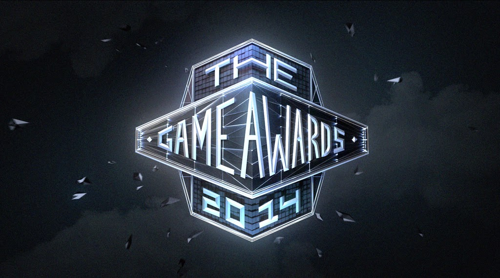
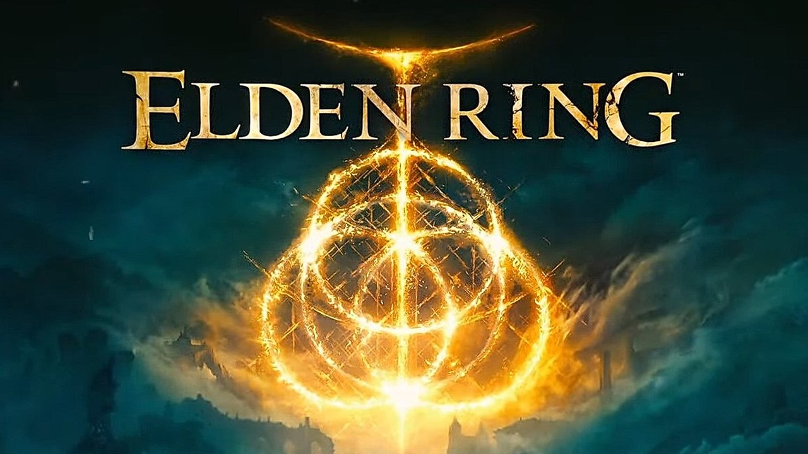

The Game Awards é um evento anual que celebra as realizações da indústria de jogos eletrônicos. Ele é organizado em várias categorias que representam diferentes segmentos do mercado, incluindo:
O Jogo do Ano - Esta categoria reconhece o melhor jogo do ano, levando em consideração sua qualidade geral, mecânicas de jogabilidade, narrativa, gráficos e som.
Melhor Direção de Jogo - Esta categoria celebra a habilidade da equipe de desenvolvimento em criar uma experiência exclusiva e envolvente para os jogadores.
Melhor Narrativa - Esta categoria reconhece a história mais cativante e emocionante presente em um jogo.
Melhor Design de Áudio - o jogo com a melhor utilização de efeitos sonoros, trilha sonora e dublagem.
Melhor Jogabilidade - Esta categoria reconhece o jogo com a jogabilidade mais inovadora e divertida.
Além dessas categorias, o Game Awards também apresenta prêmios para Música, Jogos para Impacto Social, Jogos Independentes, Melhores Jogos Mobile e Melhores Jogadores de Esports.
Como surgiu
O evento é apresentado ao vivo em um grande palco que enaltece a performance e criatividade do jogo, apresenta trailers e novidades de games e conta com a presença de celebridades e personalidades do mundo dos games.
O Game Awards foi criado em 2014 pelo jornalista e apresentador Geoff Keighley,🧷 como uma forma de celebrar e reconhecer os melhores jogos e desenvolvedores da indústria de games. O evento reúne grandes nomes da indústria e é transmitido ao vivo para uma audiência global. Desde então, o Game Awards se estabeleceu como um dos principais eventos do calendário de lançamentos de jogos e se tornou uma oportunidade para os jogadores conhecerem as novidades que estão por vir.
O jogo do ano("the game of the year")
os jogos concorrentes para O jogo do ano ou tambem conhecido como "the game of the year" foram os seguintes:
- A Plague Tale: Requiem
- Elden ring
- Horizon Forbidden West
- Stray
- God of War Ragnarok
- Xenoblade Chronicles 3
As apostas de quem realmente iria vencer ficou entre God of War Ragnarok que havia surpreendido com o primeiro game da nova fase lançado em 2018 que deixou todos fascinados, e Elden ring que foi criado pelos mesmos criadores da serie souls responsaveis por revolucionar o subgênero soulslike e o grande vencedor da noite foi ELDEN RING.
Elden Ring é um jogo de RPG de ação desenvolvido pela FromSoftware,🧷 em colaboração com o autor de fantasia George R.R. Martin.🧷 O jogo se passa em um mundo aberto de fantasia e combina os elementos de jogos anteriores da desenvolvedora, como Dark Souls e Bloodborne, com um ambiente de mundo aberto. Os jogadores assumem o papel de um herói que deve enfrentar as forças do mal e derrotar chefes poderosos em batalhas épicas. Elden Ring é altamente elogiado pela comunidade de jogos por ser um game feito com cuidado e por sua colaboração com Martin, a promessa de um mundo vasto e imersivo a ser explorado. cumprindo com as promessas dos criadores de um jogo com um mundo vasto e cheio de bons desafios ele leva o titulo de jogo do ano de 2022.
Espero que tenham gostado, e se for do seu interesse compartilhe o blog, e fique ligado para mais noticias do mundo dos games.